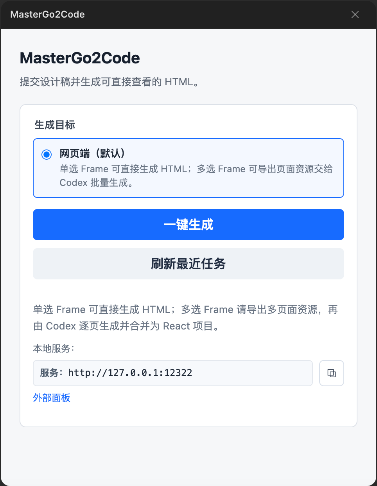
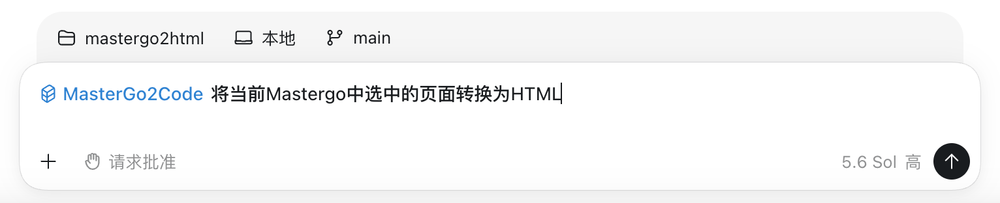
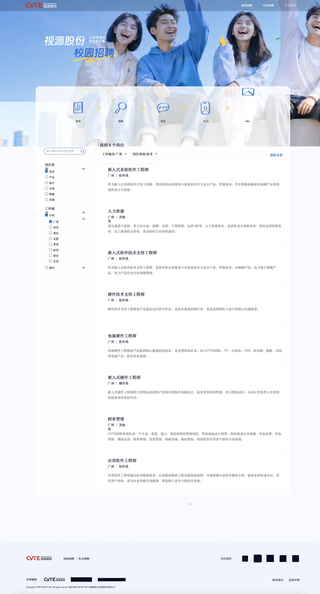
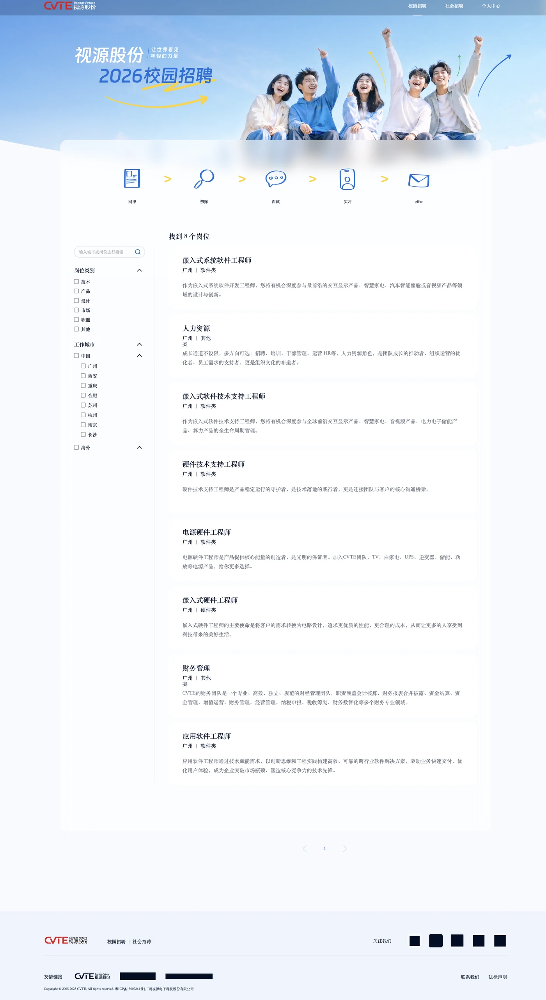
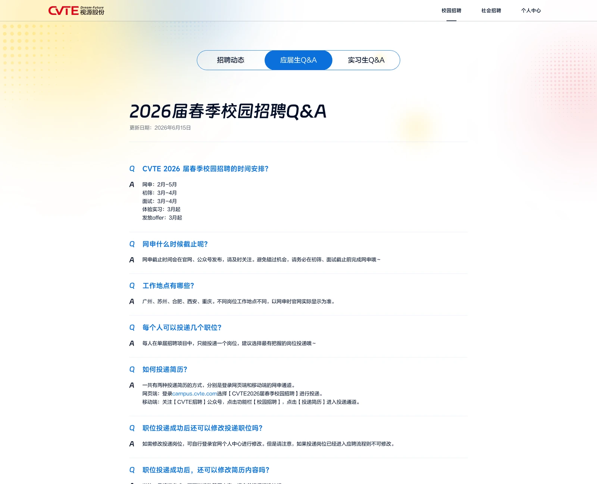
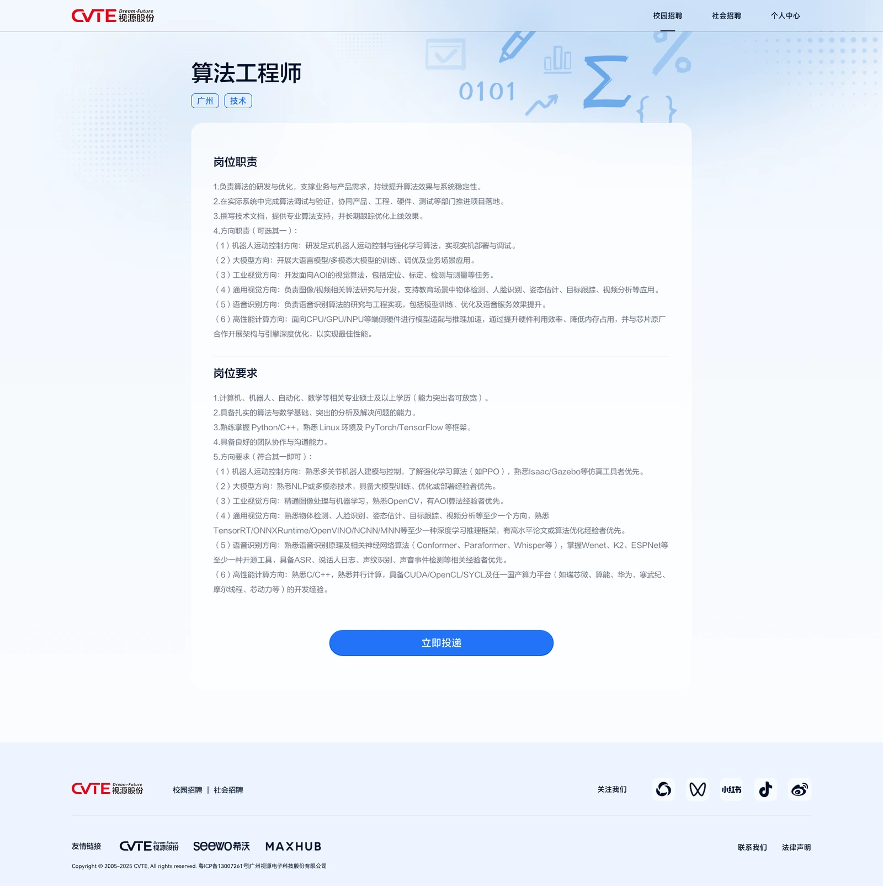
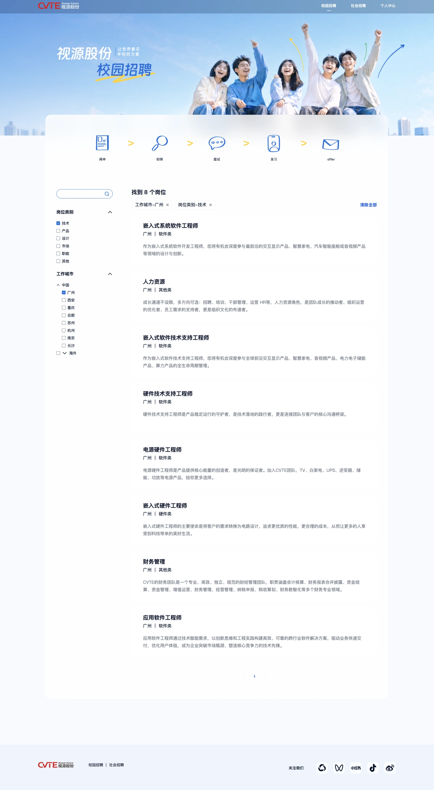
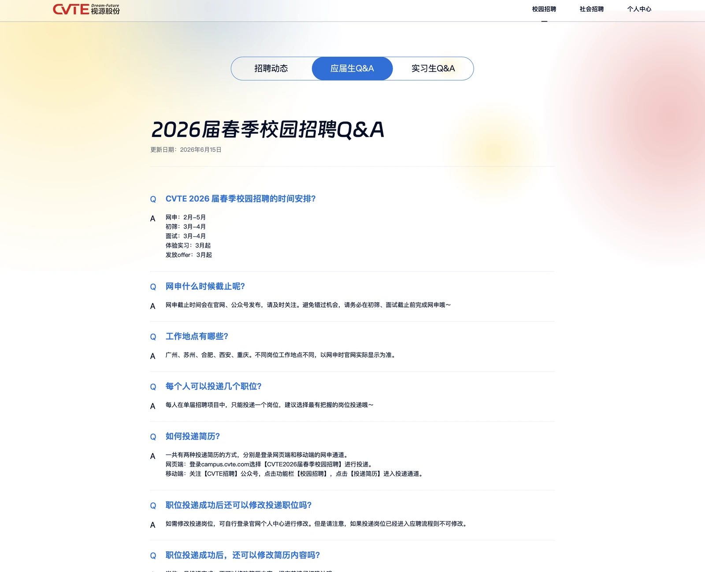
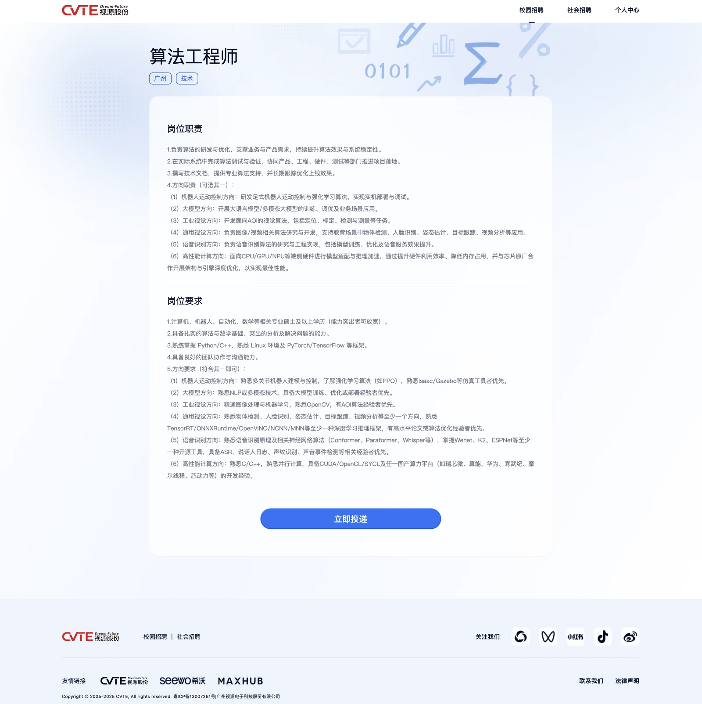
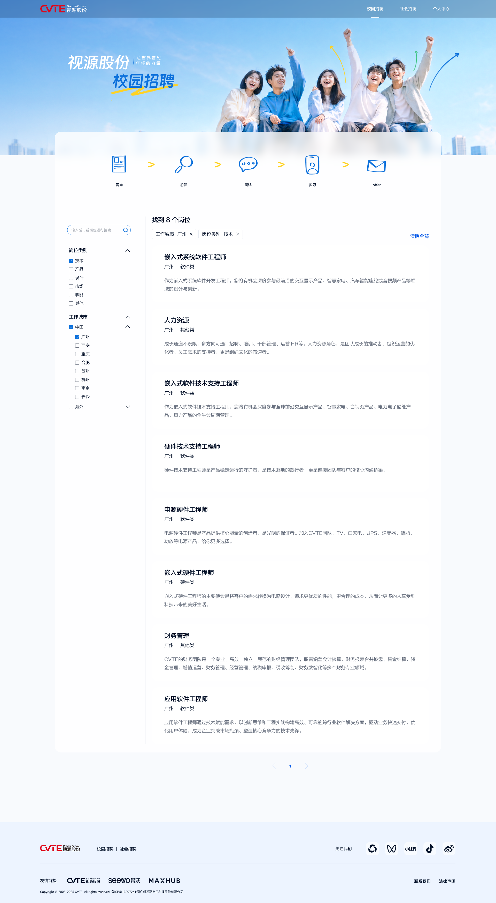

Frame 04
MASTERGO PLUGIN × CODEX SKILL
MasterGo2Code
一句话，让 MasterGo 设计稿
变成可运行的网页。
MASTERGO PLUGIN


◇
MasterGo2Code
将 MasterGo 中选中的 Frame 转换为 HTML
设计稿表达视觉意图，
HTML验证真实网页呈现。
MASTERGODESIGN FRAMES
Frame 03
Frame 02
Frame 01
BROWSERPREVIEW
localhost / preview
待与设计稿确认
01
交付前难以验证
仅凭静态设计稿，难以确认真实网页中的呈现效果。
02
需要补充大量说明
通过标注、截图和文字，解释设计意图与页面细节。
03
交付后仍要反复确认
开发还原完成后，还需要再次检查页面是否符合预期。
01
需要从 0 还原页面
根据静态设计稿重新判断页面结构、布局和资源。
02
页面信息分散且不完整
需要结合标注、截图和沟通，补充设计稿之外的信息。
03
缺少可运行的参考
无法直接对照浏览器中的实际效果，容易产生理解偏差和反复调整。
快速生成页面，不等于准确还原设计
同一份 MasterGo 设计稿，经过不同方式生成后，仍需要逐项对照和人工确认。
页尾基准

布局偏移
静态资源异常

间距不一致
静态资源异常
从设计稿到 HTML，我们要解决四类关键问题
布局、静态资源、组件和简单交互，共同决定最终页面是否准确呈现设计意图。
布局还原
准确处理位置、尺寸、间距、对齐方式与层级关系。
位置 / 尺寸 / 间距 / 层级静态资源
完整提取并正确呈现图片、Logo、蒙版与背景素材。
图片 / Logo / 蒙版 / 背景组件关系
保留组件结构、嵌套关系以及不同的视觉状态。
结构 / 嵌套 / 层级 / 状态简单交互
还原按钮、切换、滚动等基础交互行为。
按钮 / 切换 / 滚动 / 状态MasterGo2Code
MasterGo 插件×Codex Skill
选中Frame，一句话生成HTML。
01
打开 MasterGo 项目
打开 MasterGo 项目
打开mastergo项目文件，连接mcp。
02
打开 MasterGo2Code 插件
打开 MasterGo2Code 插件
选中需要转换的 Frame，打开插件。
03
使用 Codex Skill
使用 Codex Skill
在 Codex 中使用 MasterGo2Code Skill，
输入一句话指令：
◇将 MasterGo 中选中的 Frame 转换为 HTML
04
查看 HTML 结果
查看 HTML 结果
等待生成完成，打开最终 HTML 页面。
从选中Frame，到生成HTML
完整展示 MasterGo2Code 的操作流程与实际生成效果。
产品优势 01｜精确度
从整体布局，到组件细节
通过同一页面的横向对比，验证MasterGo2Code对布局与组件的还原效果。
设计稿


MasterGo2Code 生成页面



布局还原
结构 · 位置 · 间距 · 对齐
组件还原
尺寸 · 样式 · 层级 · 状态
应届生 Q&A 版头
内容卡片区
操作与页尾区
产品优势 02｜易用性
选中 Frame，一句话生成 HTML
从设计稿选择到页面预览，操作路径清晰直接。
01选中 Frame

选中 Frame
在 MasterGo 中选中需要转换的页面。
02连接 MCP，打开插件
连接 MCP，打开插件
建立连接并打开 MasterGo2Code 插件。
03Codex 一句话指令
在 Codex 中发送一句话指令
将 MasterGo 中选中的 Frame 转换为 HTML
04生成完成，预览 HTML
localhost / preview
生成完成，预览 HTML
打开生成结果，直接查看页面呈现。
产品优势 03｜可控性
一句话背后，是一条完整的生成链路
把复杂的设计稿转换过程，拆解为资源提取、页面分析、组装规划与 HTML 生成。
图片Logo蒙版
输入准备
按规则提取页面生成所需的静态资源。
页面
理解
理解
⌗布局分析
◫组件分析
◌静态资源分析
⌁交互逻辑分析
页面理解
分别理解页面结构、组件关系、资源使用与交互逻辑。
HEADERHEROCONTENTFOOTER
结构组件资源
组装规划
确定页面结构、组件层级、资源位置和生成顺序。
HTML preview
页面输出
完成页面组装，输出可以直接打开和预览的 HTML。
把更多时间，留给设计本身
MasterGo2Code 帮助设计师更快验证页面呈现、减少交付沟通，让设计意图更准确地进入开发过程。
01
更快验证
直接在浏览器中查看页面呈现，及时发现布局、组件和内容细节问题。
02
更少解释
用高保真 HTML 补充静态设计稿，减少标注、截图和反复说明。
03
更准确交付
让页面结构、静态资源和组件关系更加清晰，减少理解偏差与重复调整。
未来计划
下一步，不止是 HTML
持续优化生成效果，并将设计到代码的能力拓展到更多应用场景。
01⌖
生成更准确
持续优化整体布局、静态资源、组件关系与基础交互的还原效果。
整体布局静态资源组件关系基础交互
02◇
能力更稳定
完善复杂页面、多页面场景下的生成能力，并持续优化生成时长与预览稳定性。
复杂页面多页面生成时长生成与预览稳定性
03▯
场景更广
从 Web 页面继续拓展到 Android、App 界面与更多设计交付场景。
AndroidApp 界面更多设计交付场景
MasterGo2Code
一句话，让 MasterGo 设计稿变成可运行的网页。
谢谢大家